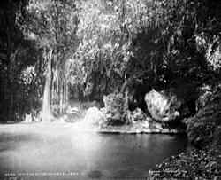
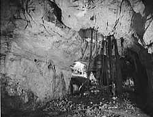

Cueva del Abra
El Abra Cave
Useful Information
| Location: | Sierra de Cucharas mountain range, near Ciudad Mante. Highway 85 to Cd. Valles, after 10km, at the road. North of Mexico City, east of San Luis Potosí. |
| Open: | no restrictions |
| Fee: | free |
| Classification: | |
| Light: | none, bring torches. |
| Dimension: | L=180m. |
| Guided tours: | |
| Photography: | |
| Accessibility: | |
| Bibliography: | |
| Address: | Cueva del Abra, Tel: +52-, Fax: +52-, |
| As far as we know this information was accurate when it was published (see years in brackets), but may have changed since then. Please check rates and details directly with the companies in question if you need more recent info. | |
| Last update: | $Date: 2015/11/20 13:21:14 $ |
History
| 1956 | first abseil by speologists from Texas. |
Description
|  |
| Image: Interior of the cave of Elabra [sic]. Photographer: William Henry Jackson (1843-1942). |
|  |
| Image: Interior of cave, El Abra, Mexico. Photographer: William Henry Jackson (1843-1942). |
Cueva del Abra is a wild cave with an enormous portal. It is followed by a huge passage, 180m long and more or less horizontal. At the end of this passage the lower end of 116m deep pit is reached, with light falling in through the window. It is also possible to visit this second entrance, and cavers often abseil into the pit. This was first done by speologists from Texas in 1959. Today its only a warm-up for the Sotano de las Golodrinas.
The cave is spacious and impressive, but almost without speleothems. The huges cavern contains a large colony of bats, which produce a great amount of guano. The guano has been mined by the locals for a long time. Both mining and frequent visitors resulted in the destroying of most speleothems.
The cave is warm and spacious, and the light falls in from two sides. Good shoes are advisable, and a torch is always a good idea when going into a cave.
 |
| Cueva del Abra Gallery |
 Search Google for "Cueva del Abra"
Search Google for "Cueva del Abra" Google Earth Placemark
Google Earth Placemark El Abra Photo Gallery by crourke at pbase.com
El Abra Photo Gallery by crourke at pbase.com